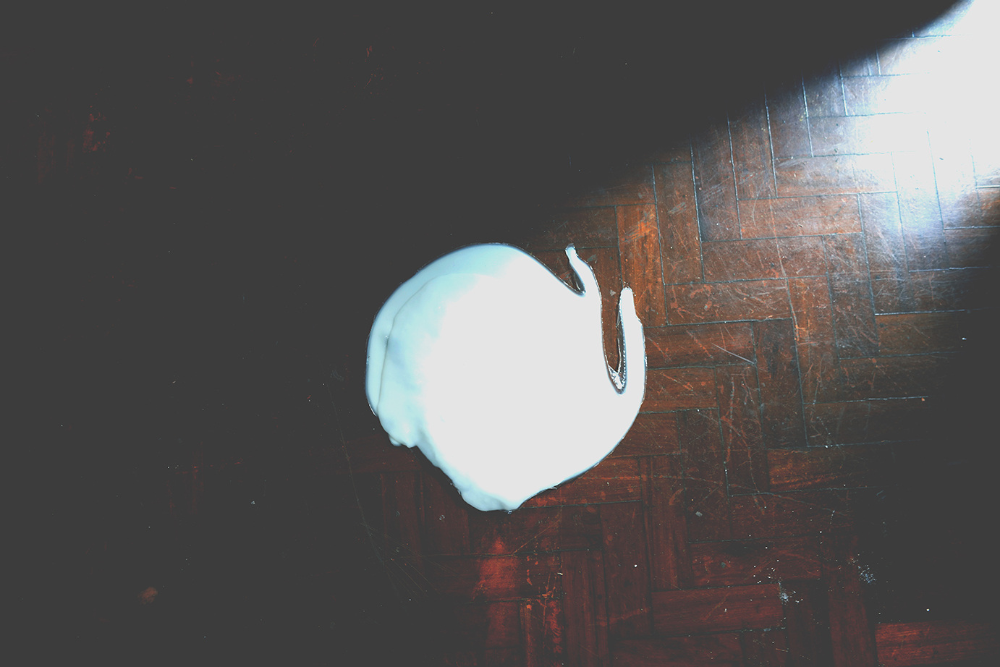

Poça primordial ou lago de babel, 2022
Poça primordial ou lago de babel - estudo, 2022 - leite de cabra, leite de vaca e resina de alta viscosidade 70 cm x 100 cm

Poça primordial ou lago de babel - estudo, 2022 - leite de cabra, leite de vaca e resina de alta viscosidade 70 cm x 100 cm
